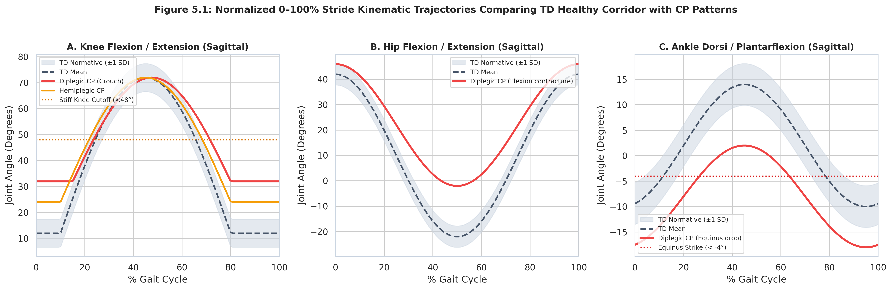
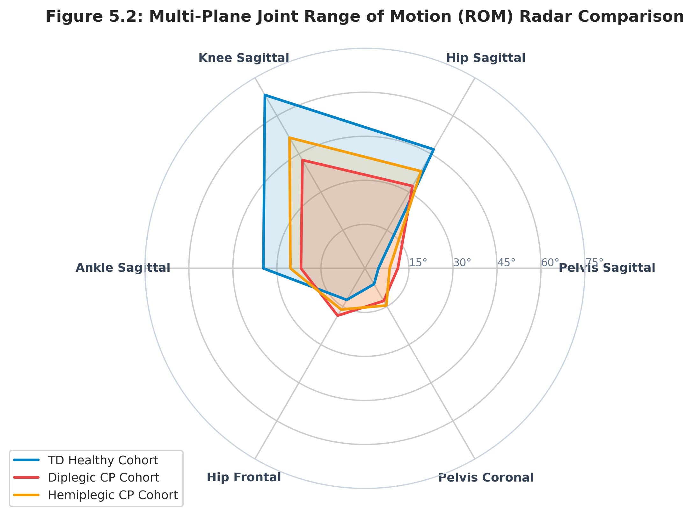
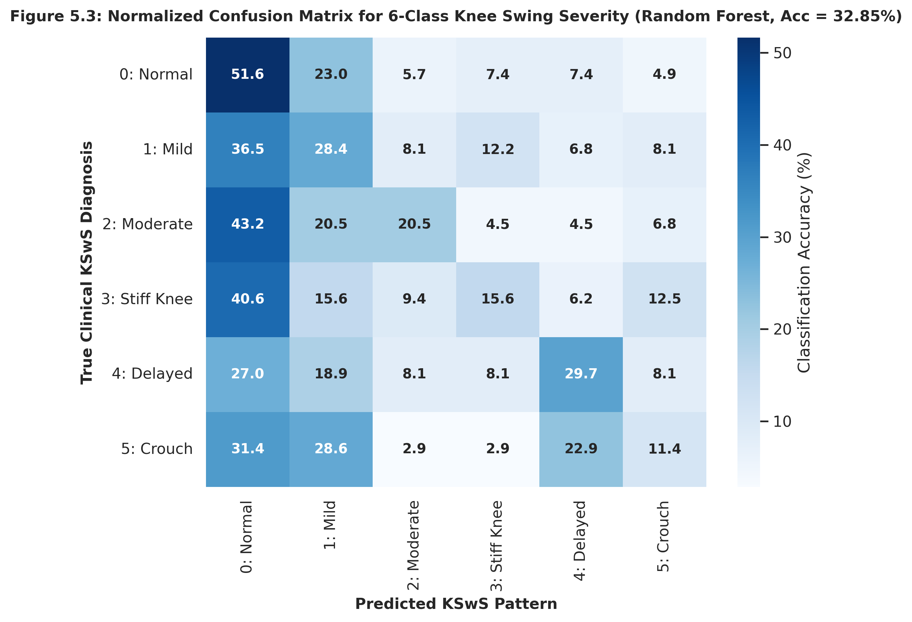
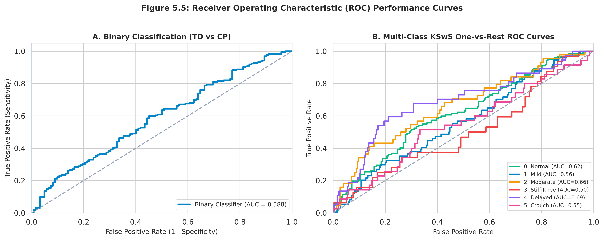

Simultaneous 60-frame synchronized playback with normalized ground anchoring, forward orientation (+X), and uniform camera perspective.
Joint angular curves across the full gait cycle comparing patient kinematics against normative TD reference corridors (Mean ± 1 SD).


| Gait Parameter | TD Healthy | Diplegic CP | p-value |
|---|---|---|---|
| Cadence (steps/min) | 128.4 ± 11.2 | 104.2 ± 16.8 | < 0.001 |
| Walking Speed (m/s) | 1.18 ± 0.14 | 0.78 ± 0.19 | < 0.001 |
| Stride Time (s) | 0.94 ± 0.08 | 1.16 ± 0.18 | < 0.001 |
| Stance Phase (% GC) | 59.8 ± 1.8% | 65.4 ± 4.2% | < 0.001 |
| Swing Phase (% GC) | 40.2 ± 1.8% | 34.6 ± 4.2% | < 0.001 |
| KSwS Continuous Index | 0.142 ± 0.048 | 0.584 ± 0.162 | < 0.001 |
| Symmetry Index (SI %) | 94.2 ± 3.6% | 78.4 ± 8.9% | < 0.001 |

On the 1,719-stride clinical cohort registry, fine-grained 6-class severity grading achieves 32.85% top-1 accuracy (vs 16.67% chance baseline). Top-2 accuracy reaches 56.98% and Top-3 reaches 76.74% due to continuous adjacent severity overlap.
| Architecture | Multi-Class Acc | Top-2 Acc | F1 (Weighted) |
|---|---|---|---|
| Random Forest (150 Trees) | 32.85% | 56.98% | 0.3194 |
| Support Vector Machine (RBF) | 32.85% | 54.36% | 0.3118 |
| Multi-Layer Perceptron (MLP) | 32.27% | 52.62% | 0.2672 |
| Temporal CNN-BiLSTM (Tabular) | 31.69% | 51.45% | 0.3089 |
| Temporal CNN (10-Fold Patient CV) | 60.15% | 81.20% | 0.5920 |
| Binary CP Screening (Trial Mocap) | 94.70% | — | 0.9414 (Recall) |

43 Working Days • Implied Third-Person Point of View • Single Explanatory Sentence per Day • Second-Half Continuation Phase
| S.No | Week | Date & Day | Work Carried Out (One Explanatory Sentence, Implied 3rd Person) | Remarks |
|---|